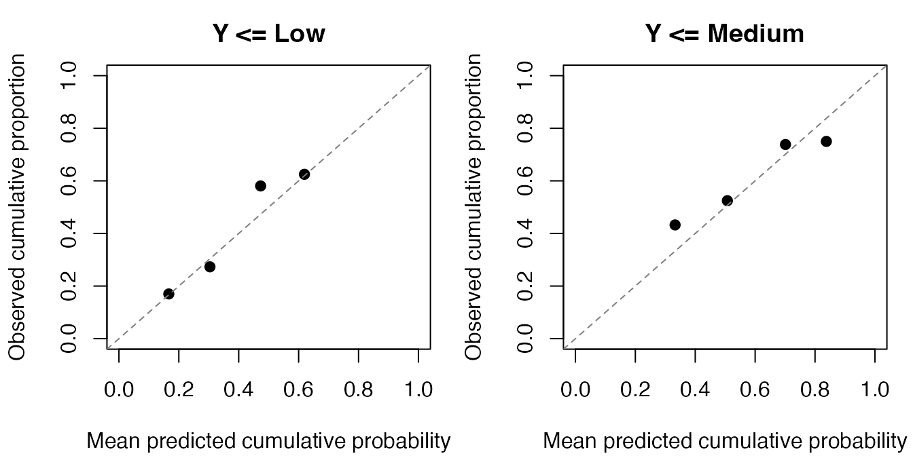
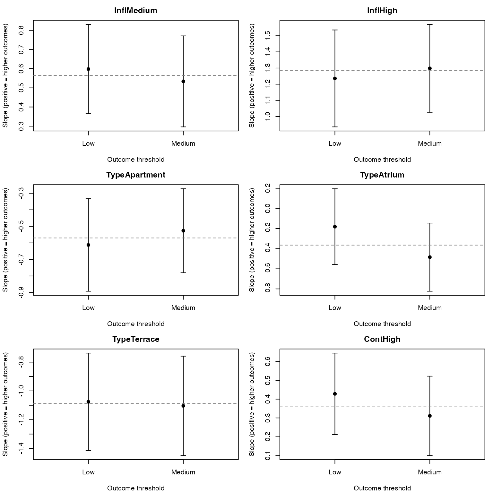
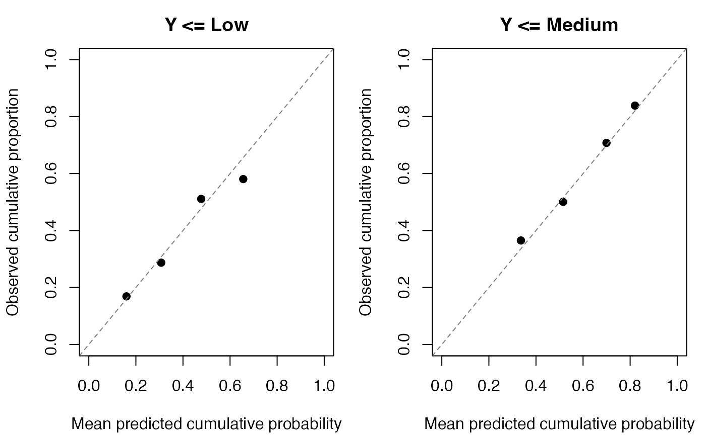

vignettes/ordinal-fastglm.Rmd
ordinal-fastglm.RmdOutcomes such as satisfaction or symptom severity have a natural ordering, but the differences between their categories need not have a numerical interpretation. Ordinal regression estimates the probabilities of these categories while preserving their order. In fastglm, this includes common-slope and partial proportional-odds models, mean bias reduction, coefficient and model-assumption tests, probability summaries, and fitting from repeatable blocks of data.
All three cumulative links, logit, probit, and complementary
log-log, support maximum likelihood (ML) and mean bias
reduction through firth=TRUE. With the logit link,
common slopes give proportional odds; allowing selected slopes to differ
across thresholds gives partial proportional odds. The corresponding
probit and complementary log-log specifications are nonparallel
cumulative-link models.
| Model specification | Fitting interface | Data and scope |
|---|---|---|
| Common slopes at all thresholds | fastglm_ordinal() |
Formula or dense matrix; individual outcomes or grouped category frequencies, with offsets |
| Selected effects that vary across thresholds |
fastglm_ordinal() with
nonparallel=~term
|
Dense formula or matrix; each declared category must have positive total frequency, with additional boundary cases |
| Common or selected threshold-specific slopes with data read in blocks |
fastglm_ordinal_streaming(), optionally
with nonparallel
|
A repeatable source; the complete design and response need not be retained |
The model specification and retained data determine which subsequent methods are available. The following guide separates tests of coefficient values from tests of the common-slope assumption.
| Analysis task | Methods and interpretation | Availability and section |
|---|---|---|
| Estimate category probabilities and associations |
predict() gives category or cumulative
probabilities; fastglm_average() gives averages and
contrasts; fastglm_marginal_effects() gives average
derivatives, with standard errors |
All three specifications; source-fit summaries require explicit evaluation data. Prediction and effect summaries |
| Test coefficients or contrasts |
fastglm_wald_test() and Wald
confint() use coefficient covariance; selected nonparallel
terms include their slopes at all thresholds |
All three specifications when the relevant covariance is available. Coefficient inference |
| Obtain likelihood-based intervals and tests | ML profile intervals,
fastglm_profile_test(), and ordinary or adjusted
fastglm_score_test()
|
Retained dense common-slope or partial fits with all categories observed; profile inference requires ML. Profiles and score tests |
| Assess the common-slope restriction |
fastglm_po_test() tests complete terms in
common-slope or partial models; linear profile or score contrasts
express more general equality restrictions |
Dense or streamed fits for common-slope tests; all categories must be observed. General contrasts require retained data. Common-slope diagnostics and partial-model comparisons |
| Change the uncertainty calculation |
fastglm_vcov() gives robust or clustered
covariance; fastglm_bootstrap() refits sampled data |
Robust covariance for dense or streamed common-slope or partial fits; bootstrap for retained common-slope fits. Category-support and convergence requirements apply. Sampling uncertainty |
| Assess the predicted distribution | Residuals, logarithmic and ranked probability scores,
and cumulative calibration through
fastglm_ordinal_assess()
|
Dense or streamed fits; original-source assessment keeps compact summaries by default. Model assessment and source assessment |
| Investigate numerical difficulty |
fastglm_diagnostics(fit,boundary=TRUE)
adds rows and categories with the smallest probabilities and
cumulative-predictor gaps |
Retained data or one source pass; the tables aid diagnosis without establishing root existence. Boundary diagnostics |
| Reuse a design or read a large dataset in blocks |
fastglm_ordinal_prepare() and
fastglm_ordinal_batch() reuse dense predictor setup;
fastglm_ordinal_streaming() rereads blocks |
Common-slope or partial models. Repeated fits and streaming |
Prepared fits retain dense data and support the same inference as direct dense fits. Streamed fits provide model-based covariance and calculate robust covariance, common-slope tests, and assessment summaries by rereading the source. Coefficient profiles and general adjusted-score tests require retained observations. Refitting bootstraps for partial models and sparse ordinal matrices are not supported. Empty-category handling also depends on the model and estimation method.
The examples proceed from model specification and bias reduction to prediction, inference, assessment, and computation. Wald, likelihood-ratio, and score procedures use large-sample reference distributions; finite bias-reduced estimates alone do not establish accurate small-sample inference.
For categories numbered from lowest to highest, the default model
fitted by fastglm_ordinal() is
The thresholds divide the outcome scale, and is an optional offset whose coefficient is fixed at one. A common slope vector applies to all thresholds. Consequently, a one-unit increase in a predictor multiplies the odds of an outcome above any threshold by the same factor, . This common odds ratio gives the model its name. It does not imply equal changes in category probabilities.
Positive slopes shift probability toward higher categories under this
sign convention, which also agrees with MASS::polr().
The thresholds already specify the model’s location, so a separate
location intercept would be redundant. Formula fits remove the ordinary
model-matrix intercept. A matrix supplied directly must omit that
intercept.
The housing
data in MASS describe satisfaction, perceived influence over
property management, housing type, and contact with other residents.
Each row represents a combination of these variables, and
Freq gives its number of residents.
housing <- MASS::housing
levels(housing$Sat)
#> [1] "Low" "Medium" "High"
c(rows=nrow(housing),residents=sum(housing$Freq))
#> rows residents
#> 72 1681
fit_ml <- fastglm_ordinal(Sat~Infl+Type+Cont,data=housing,
weights=Freq,tol=1e-10)
fit_br <- update(fit_ml,firth=TRUE)
profiles <- unique(housing[,c("Infl","Type","Cont")])[1:4,]
summary(fit_br)
#> Proportional-odds regression
#>
#> Call:
#> fastglm::fastglm_ordinal(x = Sat ~ Infl + Type + Cont, data = housing,
#> weights = Freq, firth = TRUE, tol = 1e-10)
#> Estimation: mean bias reduction
#>
#> Location coefficients (positive means higher outcomes):
#> Estimate Std. Error z value Pr(>|z|)
#> InflMedium 0.56442 0.10496 5.378 < 1e-04 ***
#> InflHigh 1.28379 0.12667 10.135 < 1e-04 ***
#> TypeApartment -0.57013 0.11873 -4.802 < 1e-04 ***
#> TypeAtrium -0.36499 0.15675 -2.328 0.019887 *
#> TypeTerrace -1.08673 0.15149 -7.174 < 1e-04 ***
#> ContHigh 0.35891 0.09535 3.764 0.000167 ***
#> ---
#> Signif. codes: 0 '***' 0.001 '**' 0.01 '*' 0.05 '.' 0.1 ' ' 1
#>
#> Thresholds:
#> Estimate Std. Error
#> threshold:Low|Medium -0.4943 0.1245
#> threshold:Medium|High 0.6883 0.1252
#>
#> Uncertainty: expected Fisher information
#> Sample: 1681 observations represented by 72 positive-frequency rows
#> Convergence: converged (9 iterations)The response factor supplies the order of the categories. An
unordered factor requires an explicit order through levels,
which avoids interpreting an alphabetical coding as a substantive
ordering. The weights here are frequencies: a row with weight ten
represents ten observations with the same recorded values. They are
retained on that scale rather than rescaled to sum to the number of
rows.
Mean bias reduction solves the adjusted score equations developed for cumulative-link models by Kosmidis (2014). These equations target the leading bias of the original thresholds and common slopes. The ordinal adjustment generally does not arise from adding a log-determinant penalty to the likelihood, so the binomial penalized-profile calculations are not applied to this model.
cbind(maximum_likelihood=coef(fit_ml,component="location"),
mean_bias_reduction=coef(fit_br,component="location"))
#> maximum_likelihood mean_bias_reduction
#> InflMedium 0.5663937 0.5644198
#> InflHigh 1.2888191 1.2837886
#> TypeApartment -0.5723500 -0.5701275
#> TypeAtrium -0.3661864 -0.3649909
#> TypeTerrace -1.0910147 -1.0867312
#> ContHigh 0.3602840 0.3589079
exp(coef(fit_br,component="location"))
#> InflMedium InflHigh TypeApartment TypeAtrium TypeTerrace
#> 1.7584272 3.6102917 0.5654534 0.6942030 0.3373173
#> ContHigh
#> 1.4317649
fastglm_diagnostics(fit_br)
#> Numerical diagnostics
#> Convergence: converged (9 iterations)
#> Estimable coefficients (rank): 8
#> Boundary flag: no
#>
#> Check Value
#> Largest absolute adjusted score (reported units) 2.112e-10
#> Standardized adjusted score 2.273e-11
#> Remaining change in linear predictor 3.456e-12
#> Reciprocal information condition number 0.1449
#> Score scaling: Raw scores use reported predictor units; standardized scores use
#> the centered/scaled fitting coordinates.The exponentiated slopes are common odds ratios. The fitted probabilities below often provide a more direct description of the outcome distribution. The convergence diagnostics report the remaining change proposed by the estimating equations; a returned coefficient vector alone does not establish that those equations were solved. The reciprocal information condition number describes numerical conditioning in the fitting coordinates: values near zero indicate that the information matrix is close to singular. This check concerns the stability of the coefficient calculations, whereas the scores and remaining changes assess whether the fitting equations have been solved.
Housing type has several coefficients. A joint Wald test assesses whether those coefficients are all zero in the specified proportional-odds model. A separate contrast compares high with medium perceived influence.
fastglm_wald_test(fit_br,terms="Type")
#> Joint Wald test
#> Terms: Type
#> Estimation: mean bias reduction
#> Covariance: model-based
#>
#> Statistic df p-value
#> 54.2 3 < 1e-04
#>
#> Tested contrasts:
#> Estimate Std. Error Null
#> TypeApartment -0.5701 0.1187 0.0000
#> TypeAtrium -0.3650 0.1568 0.0000
#> TypeTerrace -1.0867 0.1515 0.0000
#>
#> Note: First-order chi-square approximation; validity depends on coefficient
#> estimability and the covariance assumptions.
fastglm_wald_test(fit_br,contrast=c(InflHigh=1,InflMedium=-1))
#> Joint Wald test
#> Estimation: mean bias reduction
#> Covariance: model-based
#>
#> Statistic df p-value
#> 33.82 1 < 1e-04
#>
#> Tested contrasts:
#> Estimate Std. Error Null
#> Contrast 1 0.7194 0.1237 0.0000
#>
#> Note: First-order chi-square approximation; validity depends on coefficient
#> estimability and the covariance assumptions.These tests use the estimated coefficient covariance and a
first-order chi-square approximation. The same interface accepts an
eligible robust covariance through vcov.. For mean bias
reduction, finite estimates permit the calculation but do not establish
small-sample accuracy. Testing whether regression coefficients are zero
addresses their contribution to the fitted model; the common-slope tests
later in this vignette address whether their effects differ across
thresholds.
The cumulative-logit model uses the logistic distribution to translate a threshold and predictor value into a cumulative probability. More generally, the model is The probit link uses the standard normal distribution for . The complementary log-log link uses , whose asymmetric shape allows cumulative probabilities to approach zero and one at different rates. All three links retain ordered thresholds and common slopes. Positive slopes shift probability toward higher outcomes under the same sign convention.
fit_probit <- update(fit_br,link="probit")
fit_cloglog <- update(fit_br,link="cloglog")
link_models <- list(logit=fit_br,probit=fit_probit,cloglog=fit_cloglog)
link_averages <- do.call(rbind,lapply(names(link_models),function(link) {
data.frame(link=link,fastglm_average(link_models[[link]],weights=housing$Freq))
}))
rownames(link_averages) <- NULL
link_averages
#> link category estimate std.error conf.low conf.high
#> 1 logit Low 0.3375535 0.01106238 0.3158716 0.3592353
#> 2 logit Medium 0.2646049 0.01073890 0.2435571 0.2856528
#> 3 logit High 0.3978416 0.01140385 0.3754905 0.4201927
#> 4 probit Low 0.3378106 0.01109350 0.3160678 0.3595535
#> 5 probit Medium 0.2646536 0.01074579 0.2435922 0.2857149
#> 6 probit High 0.3975358 0.01144687 0.3751003 0.4199713
#> 7 cloglog Low 0.3394692 0.01121150 0.3174951 0.3614433
#> 8 cloglog Medium 0.2646439 0.01071640 0.2436401 0.2856476
#> 9 cloglog High 0.3958869 0.01136783 0.3736064 0.4181675The fits are compared through their category probabilities because their coefficient scales differ. Exponentiated coefficients have the common-odds-ratio interpretation for the logit link. Reversing the outcome order changes a complementary-log-log model, so the declared ordering should reflect the substantive outcome scale.
Mean bias reduction uses the first and second derivatives of the
selected cumulative distribution in the adjusted equations of Kosmidis
(2014). It targets bias in that link’s threshold and slope parameters.
The same link is retained by prepared fits, refitting bootstrap
calculations, predictions, marginal effects, and model assessment.
fastglm_po_test() tests the common-slope restriction on the
fitted link scale; for probit and complementary log-log models its
printed heading identifies that interpretation. These score and Wald
tests retain their first-order inferential scope.
With two categories, the cumulative-link model is a binary regression for membership in the lower category. Under the convention above, its binary linear predictor is the threshold minus the location predictor and offset. The corresponding binomial GLM and ordinal model therefore solve the same mean bias-reduction equations after accounting for these signs. For binary probit and complementary log-log fits, bounded Fisher-scoring updates permit temporary increases in the score norm; requiring that norm to decrease at every step can prevent progress toward a solution. Convergence still requires a small adjusted score and a small remaining predictor change.
A predictor can have a different association with moving above the lowest outcome category than with reaching the highest category. A partial proportional-odds model represents this difference by estimating separate slopes at the cumulative thresholds for selected predictors. The other predictors retain a common slope, which limits the number of parameters when only some associations require this flexibility.
For common predictors and predictors with threshold-specific effects, the model is
With the logit link, is the odds ratio for an outcome above threshold associated with a one-unit increase in predictor , holding the other predictors fixed. The probit and complementary log-log links support the same specification, with effects interpreted on their respective link scales. We refer to these more generally as nonparallel cumulative-link models because their slope vectors can differ across thresholds.
The nonparallel argument selects the effects that vary.
For the housing example, we allow contact with other residents to have
separate effects on the odds of satisfaction above Low and above Medium.
This illustrates the specification; the choice of terms should also
reflect the scientific question and the information available to
estimate the additional effects.
fit_partial <- fastglm_ordinal(
Sat~Infl+Type+Cont,data=housing,weights=Freq,
nonparallel=~Cont,tol=1e-10)
summary(fit_partial)
#> Partial proportional-odds regression
#>
#> Call:
#> fastglm::fastglm_ordinal(x = Sat ~ Infl + Type + Cont, data = housing,
#> weights = Freq, tol = 1e-10, nonparallel = ~Cont)
#> Estimation: maximum likelihood
#>
#> Common slopes:
#> Estimate Std. Error z value Pr(>|z|)
#> InflMedium 0.5695 0.1050 5.422 <1e-04 ***
#> InflHigh 1.2884 0.1267 10.167 <1e-04 ***
#> TypeApartment -0.5706 0.1188 -4.802 <1e-04 ***
#> TypeAtrium -0.3643 0.1568 -2.323 0.0202 *
#> TypeTerrace -1.0980 0.1516 -7.242 <1e-04 ***
#> ---
#> Signif. codes: 0 '***' 0.001 '**' 0.01 '*' 0.05 '.' 0.1 ' ' 1
#>
#> Threshold-specific slopes:
#> Predictor Threshold Estimate Std. Error z value Pr(>|z|)
#> ContHigh Low|Medium 0.4440 0.1093 4.062 < 1e-04
#> ContHigh Medium|High 0.2861 0.1065 2.686 0.007234
#>
#> Thresholds at zero covariates and offset:
#> Estimate Std. Error
#> threshold:Low|Medium -0.4494 0.1281
#> threshold:Medium|High 0.6480 0.1279
#>
#> Uncertainty: expected Fisher information
#> Sample: 1681 observations represented by 72 positive-frequency rows
#> Convergence: converged (9 iterations)
exp(fit_partial$gamma)
#> Low|Medium Medium|High
#> ContHigh 1.558883 1.331209Selecting a factor includes all of its model-matrix columns at each
threshold. Interactions and transformations can be selected as complete
formula terms, such as nonparallel=~exposure:group when
that term appears in the fitted formula. With a matrix interface,
nonparallel accepts predictor column names or indices.
Omitting this argument retains the common-slope model.
The summary separates common slopes, threshold-specific slopes, and
thresholds. coef(fit_partial,component="nonparallel")
extracts the varying slopes as a named vector, while
fit_partial$gamma arranges them by predictor and threshold.
A joint term test includes all of the selected term’s coefficients
across thresholds:
fastglm_wald_test(fit_partial,terms="Cont")
#> Joint Wald test
#> Terms: Cont
#> Estimation: fitted model coefficients
#> Covariance: model-based
#>
#> Statistic df p-value
#> 16.72 2 0.0002345
#>
#> Tested contrasts:
#> Estimate Std. Error Null
#> nonparallel:ContHigh:Low|Medium 0.4440 0.1093 0.0000
#> nonparallel:ContHigh:Medium|High 0.2861 0.1065 0.0000
#>
#> Note: First-order chi-square approximation; validity depends on coefficient
#> estimability and the covariance assumptions.
predict(fit_partial,newdata=profiles,se.fit=TRUE)
#> Predictions with standard errors
#> Scale: category probabilities
#> Covariance: expected Fisher information
#>
#> Row Component Estimate Std. Error
#> 1 Low 0.3895 0.03046
#> 1 Medium 0.2670 0.01736
#> 1 High 0.3434 0.02885
#> 4 Low 0.2653 0.02433
#> 4 Medium 0.2544 0.01755
#> 4 High 0.4804 0.03045
#> 7 Low 0.1496 0.01856
#> 7 Medium 0.1956 0.01803
#> 7 High 0.6548 0.03145
#> 10 Low 0.5303 0.02868
#> 10 Medium 0.2415 0.01741
#> 10 High 0.2282 0.02098
fastglm_average(fit_partial,weights=housing$Freq)
#> category estimate std.error conf.low conf.high
#> 1 Low 0.3368425 0.01104312 0.3151983 0.3584866
#> 2 Medium 0.2654118 0.01074151 0.2443588 0.2864648
#> 3 High 0.3977458 0.01140406 0.3753942 0.4200973This Wald test assesses whether both contact effects are zero. To assess equality of the two contact effects, we specify their difference as a named coefficient contrast:
fastglm_wald_test(fit_partial,contrast=c(
"nonparallel:ContHigh:Low|Medium"=1,
"nonparallel:ContHigh:Medium|High"=-1))
#> Joint Wald test
#> Estimation: fitted model coefficients
#> Covariance: model-based
#>
#> Statistic df p-value
#> 2.467 1 0.1162
#>
#> Tested contrasts:
#> Estimate Std. Error Null
#> Contrast 1 0.1579 0.1005 0.0000
#>
#> Note: First-order chi-square approximation; validity depends on coefficient
#> estimability and the covariance assumptions.The contrast uses the covariance between the two estimated slopes.
Its chi-square reference is a first-order approximation under a regular
interior model. Probability standard errors and averages likewise use
the covariance of all thresholds and slopes, including their
correlations. They therefore account for the additional fitted
parameters. Prediction assessment uses
fastglm_ordinal_assess():
fastglm_ordinal_assess(fit_partial)
#> Ordinal assessment (training)
#>
#> Prediction scores:
#> Frequency Log loss Ranked probability score Normalized RPS
#> 1681 1.034 0.4273 0.2136These scores assess predictions on the fitting sample. As with the
common-slope model, separate evaluation outcomes can be supplied through
newdata, y, and frequency weights
to assess predictions on observations not used for estimation.
Separate slopes can produce crossing cumulative probabilities at some predictor values. Valid category probabilities require each consecutive cumulative predictor to increase:
The common predictors and offset cancel from this difference. The fitter enforces this condition at positive-frequency training rows, and prediction checks it again at the requested rows. For continuous predictors with varying effects, extrapolation can violate this condition even when fitting converges. An invalid prediction produces an error identifying the affected rows; clipping probabilities or reordering thresholds would change the specified model.
The reported thresholds correspond to predictors and offset equal to
zero. That combination can lie outside the valid prediction range, so
the thresholds alone need not be ordered.
fastglm_diagnostics() reports the smallest fitted
cumulative-predictor gap, which assesses ordering at the observed
predictor values. With type="link", predictions are a
matrix containing one cumulative predictor per threshold. Applying the
fitted inverse link to this matrix gives the cumulative
probabilities.
Sparse category patterns can produce infinite maximum-likelihood estimates even when each category is represented somewhere in the data. Mean bias reduction adjusts the joint equations for thresholds, common slopes, and varying slopes. Because the adjustment uses their full expected information, it accounts for the parameters estimated together in the cumulative model.
The wine example in Kosmidis (2014) relates five ordered bitterness ratings to temperature during grape crushing and contact between juice and grape skins. We use the four groups of category counts from that example, with a common contact effect and threshold-specific temperature effects.
wine <- data.frame(contact=c(0,1,0,1),temperature=c(0,0,1,1))
wine$rating <- I(rbind(c(4,9,5,0,0),c(1,7,8,2,0),
c(0,5,8,3,2),c(0,1,5,7,5)))
colnames(wine$rating) <- paste0("rating",1:5)
wine_br <- fastglm_ordinal(
rating~contact+temperature,data=wine,
nonparallel=~temperature,firth=TRUE,tol=1e-9)
summary(wine_br)
#> Partial proportional-odds regression
#>
#> Call:
#> fastglm::fastglm_ordinal(x = rating ~ contact + temperature,
#> data = wine, firth = TRUE, tol = 1e-09, nonparallel = ~temperature)
#> Estimation: mean bias reduction
#>
#> Common slopes:
#> Estimate Std. Error z value Pr(>|z|)
#> contact 1.397 0.463 3.018 0.00254 **
#> ---
#> Signif. codes: 0 '***' 0.001 '**' 0.01 '*' 0.05 '.' 0.1 ' ' 1
#>
#> Threshold-specific slopes:
#> Predictor Threshold Estimate Std. Error z value Pr(>|z|)
#> temperature rating1|rating2 2.621 1.5240 1.720 0.0854965
#> temperature rating2|rating3 2.050 0.5789 3.541 0.0003980
#> temperature rating3|rating4 2.648 0.7546 3.510 0.0004489
#> temperature rating4|rating5 2.961 1.4992 1.975 0.0482472
#>
#> Thresholds at zero covariates and offset:
#> Estimate Std. Error
#> threshold:rating1|rating2 -1.1950 0.4987
#> threshold:rating2|rating3 1.0545 0.4358
#> threshold:rating3|rating4 3.4978 0.7388
#> threshold:rating4|rating5 5.1963 1.4746
#>
#> Uncertainty: expected Fisher information
#> Sample: 72 observations represented by 4 positive-frequency rows
#> Convergence: converged (10 iterations)
fastglm_diagnostics(wine_br)
#> Numerical diagnostics
#> Convergence: converged (10 iterations)
#> Estimable coefficients (rank): 9
#> Boundary flag: no
#>
#> Check Value
#> Largest absolute adjusted score (reported units) 2.432e-10
#> Standardized adjusted score 1.209e-10
#> Remaining change in linear predictor 2.832e-10
#> Reciprocal information condition number 0.03217
#> Smallest fitted cumulative-predictor gap 1.386
#> Score scaling: Raw scores use reported predictor units; standardized scores use
#> the centered/scaled fitting coordinates.The published analysis identifies infinite maximum-likelihood coefficients for this specification. The adjusted equations yield finite estimates here. This calculation reproduces the categorical frequency likelihood in that analysis. The original observations include repeated ratings by judges; the model-based covariance treats the represented observations as independent and does not account for dependence within judges.
Mean bias reduction is available for all three links and targets the original threshold and slope coefficients. It does not guarantee a finite solution or accurate small-sample Wald inference for every design. The diagnostics check the adjusted score, remaining predictor change, information conditioning, and probability ordering. A small score alone is insufficient when the remaining update or information indicates an unstable fit.
Nonparallel models require positive total frequency in every declared category. They support dense, prepared, and streamed fitting; the inference available afterward depends on whether observations are retained, as summarized in the support guide. The empty-category handling below applies to common-slope models.
pred <- predict(fit_br,newdata=profiles,se.fit=TRUE)
pred
#> Predictions with standard errors
#> Scale: category probabilities
#> Covariance: expected Fisher information
#>
#> Row Component Estimate Std. Error
#> 1 Low 0.3789 0.02931
#> 1 Medium 0.2867 0.01172
#> 1 High 0.3344 0.02787
#> 4 Low 0.2576 0.02327
#> 4 Medium 0.2734 0.01274
#> 4 High 0.4691 0.02957
#> 7 Low 0.1445 0.01764
#> 7 Medium 0.2108 0.01606
#> 7 High 0.6446 0.03127
#> 10 Low 0.5189 0.02784
#> 10 Medium 0.2598 0.01312
#> 10 High 0.2212 0.01997
predict(fit_br,newdata=profiles,type="cumulative")
#> Low Medium
#> 1 0.3788815 0.6655922
#> 4 0.2575545 0.5309344
#> 7 0.1445395 0.3553801
#> 10 0.5189481 0.7787580The display pairs each profile and outcome category with its
estimated probability and standard error.
as.data.frame(pred) extracts this table, and
pred$fit retains the original probability matrix, whose
rows sum to one. Cumulative predictions give the probability through
each category except the last, whose cumulative probability is
necessarily one. Prediction standard errors combine uncertainty in the
thresholds and slopes using expected Fisher information, the model-based
measure of information about these parameters. They assume independent
categorical observations and a correctly specified proportional-odds
model. These first-order approximations can be unreliable in small or
extreme samples.
Average probabilities describe a covariate distribution rather than a single profile. Because the housing rows represent different numbers of residents, the following calculation uses the frequencies again as averaging weights. Fitting weights determine the estimated model; averaging weights determine the population of predictor values over which predictions are summarized.
fastglm_average(fit_br,weights=housing$Freq)
#> category estimate std.error conf.low conf.high
#> 1 Low 0.3375535 0.01106238 0.3158716 0.3592353
#> 2 Medium 0.2646049 0.01073890 0.2435571 0.2856528
#> 3 High 0.3978416 0.01140385 0.3754905 0.4201927
low_contact <- housing
low_contact$Cont <- factor(rep("Low",nrow(housing)),
levels=levels(housing$Cont))
contact_difference <- fastglm_average(
fit_br,newdata=low_contact,weights=housing$Freq,
contrast=function(x) {
x[,"ContHigh"] <- 1
x
})
contact_difference
#> category estimate std.error conf.low conf.high
#> 1 Low -0.074837941 0.019854584 -0.113752212 -0.0359236711
#> 2 Medium -0.003712903 0.001784222 -0.007209914 -0.0002158919
#> 3 High 0.078550844 0.020543515 0.038286295 0.1188153933This contrast compares high with low contact while keeping the observed distribution of influence and housing type fixed. Each estimate is a difference in the probability of the named satisfaction category. The differences sum to zero because both sets of probabilities sum to one. These are model-based descriptive comparisons, with uncertainty conditional on the supplied predictor distribution. The reported intervals use a normal approximation and are not truncated to the range of possible probability differences.
A continuous predictor also permits a local comparison: the rate at which each category probability changes as the predictor increases. This derivative is often called a marginal effect. Its size can vary across observations even when the model has a common slope, because the probabilities depend on the other predictor values. Averaging these derivatives summarizes the local association over a specified predictor distribution.
The housing predictors above are categorical, so their associations are described by discrete contrasts. For a continuous example, we generate an ordered severity outcome from an exposure and a binary group. The quadratic term allows the association with exposure to vary over its range, and the interaction allows that association to differ between groups.
set.seed(110303)
severity <- data.frame(exposure=runif(500,0,3),
group=factor(rep(c("A","B"),250)))
location <- with(severity,.7*exposure-.15*exposure^2+
.35*exposure*(group=="B"))
severity$outcome <- ordered(cut(location+rlogis(nrow(severity)),
c(-Inf,.3,1.6,Inf),labels=c("low","moderate","high")))
severity_fit <- fastglm_ordinal(
outcome~exposure+I(exposure^2)+exposure:group,
data=severity,firth=TRUE)
exposure_effect <- fastglm_marginal_effects(
severity_fit,"exposure",newdata=severity)
exposure_effect
#> variable category estimate std.error conf.low conf.high
#> 1 exposure low -0.10749510 0.02204023 -0.15069317 -0.06429704
#> 2 exposure moderate 0.03427703 0.01115531 0.01241303 0.05614103
#> 3 exposure high 0.07321807 0.01749777 0.03892307 0.10751308The estimates are changes in probability per unit of exposure, averaged over these observations. Multiplying an estimate by a small exposure change approximates the corresponding average probability difference. A full one-unit change can differ appreciably from this local approximation. The effects sum to zero across categories because increases in some category probabilities are accompanied by decreases in others. A positive common slope shifts probability toward higher outcomes, but an intermediate category can gain or lose probability depending on the predictor values.
For formula fits, variable="exposure" refers to the
original exposure variable. The calculation differentiates its linear
term, squared term, and interaction together, using the fitted
prediction basis. Matrix fits differentiate the named design column
while holding the other columns fixed. Formula derivatives use small
centered changes in the predictor; terms must be smooth within each row,
and both perturbed values must lie in the transformation’s domain.
Expressions that recompute sample summaries, such as
I(exposure-mean(exposure)), are unsupported. Supplying
newdata is necessary when the original predictor cannot be
recovered from the stored model frame. Offsets are held fixed, including
offsets expressed as functions of the selected predictor.
The intervals account for uncertainty in the thresholds and slopes
through the delta method. They condition on the supplied predictor
distribution and averaging weights; frequency weights must be supplied
again when those frequencies define the desired average. The
vcov. argument accepts an alternative coefficient
covariance, including an eligible robust covariance from
fastglm_vcov(). These intervals use a first-order normal
approximation and may be unreliable in small or extreme samples.
The same calculation applies when exposure has threshold-specific effects. Each cumulative probability then has its own exposure slope, and the uncertainty calculation includes their joint covariance.
severity_partial <- update(severity_fit,nonparallel=~exposure)
fastglm_marginal_effects(severity_partial,"exposure",newdata=severity)
#> variable category estimate std.error conf.low conf.high
#> 1 exposure low -0.12006449 0.02346935 -0.16606357 -0.07406541
#> 2 exposure moderate 0.06068574 0.02194015 0.01768385 0.10368764
#> 3 exposure high 0.05937875 0.02004914 0.02008316 0.09867434These are local derivatives at the supplied predictor values. The fitted cumulative probabilities must be ordered at those values; a derivative does not establish that a larger exposure change remains within the valid prediction range.
Coefficient tests ask whether specified effects or contrasts equal their hypothesized values. Tests of the common-slope restriction ask whether those effects can be shared across thresholds. We first consider coefficient inference and uncertainty calculations; the common-slope tests appear with model assessment.
A Wald interval summarizes uncertainty using a coefficient estimate and its standard error. A profile-likelihood interval instead considers candidate values of that coefficient and re-estimates all other parameters at each value. Those other parameters are called nuisance parameters for this calculation: they remain part of the model, but they are not the focus of the interval. Profiling allows the likelihood to describe different amounts of uncertainty on either side of the estimate.
For maximum-likelihood ordinal fits with common or threshold-specific slopes, we can obtain profile intervals and test several coefficient values jointly. The following test assesses the contribution of housing type while re-estimating the thresholds and the other slopes.
confint(fit_ml,parm="ContHigh",method="profile")
#> Profile confidence intervals
#> Method: Ordinal profile likelihood (asymptotic chi-square reference)
#> Confidence level: 95%
#>
#> 2.5% 97.5%
#> ContHigh 0.1734 0.5479
fastglm_profile_test(fit_ml,
parm=c("TypeApartment","TypeAtrium","TypeTerrace"))
#> Ordinal likelihood ratio test (asymptotic chi-square reference)
#> Null fit: maximum likelihood
#> Sample: 1681 observations represented by 72 rows
#>
#> Statistic df p-value
#> 55.91 3 < 1e-04
#>
#> Tested coefficients:
#> Estimate Null
#> TypeApartment -0.5724 0.0000
#> TypeAtrium -0.3662 0.0000
#> TypeTerrace -1.0910 0.0000The test compares the unrestricted likelihood with the largest likelihood under the stated coefficient values, which default to zero. Its chi-square reference is a first-order approximation. Profile intervals invert the corresponding one-coefficient test. They can describe likelihood asymmetry, but they do not guarantee accurate coverage in small samples. These calculations support logit, probit, and complementary log-log models with retained dense data and every category observed. A failed constrained fit or interval search remains unavailable, with an explanation in the saved diagnostics. There is no automatic replacement by a Wald result.
The score test requires fitting only the model under the hypothesis. It measures how strongly the likelihood would initially increase when the tested coefficients are allowed to move away from their hypothesized values, accounting for the estimation of the nuisance parameters.
type_score <- fastglm_score_test(fit_br,terms="Type")
type_score
#> Ordinal score test (asymptotic chi-square reference)
#> Terms: Type
#> Null fit: maximum likelihood
#> Estimation: mean bias reduction
#> Sample: 1681 observations represented by 72 rows
#>
#> Statistic df p-value
#> 55.13 3 < 1e-04
#>
#> Tested contrasts:
#> Estimate Null
#> TypeApartment -0.5701 0.0000
#> TypeAtrium -0.3650 0.0000
#> TypeTerrace -1.0867 0.0000
as.data.frame(type_score)
#> statistic df p.value null.estimation available
#> 1 55.12683 3 6.451452e-12 ML TRUEThe default uses an ML null fit even when the supplied model was estimated with mean bias reduction. An explicit alternative uses the adjusted score equations under the hypothesis:
fastglm_score_test(fit_br,terms="Type",null.estimation="meanBR")
#> Ordinal adjusted-score test (asymptotic chi-square reference)
#> Terms: Type
#> Null fit: mean bias reduction
#> Estimation: mean bias reduction
#> Sample: 1681 observations represented by 72 rows
#>
#> Statistic df p-value
#> 55.05 3 < 1e-04
#>
#> Tested contrasts:
#> Estimate Null
#> TypeApartment -0.5701 0.0000
#> TypeAtrium -0.3650 0.0000
#> TypeTerrace -1.0867 0.0000
fastglm_score_test(fit_br,
contrast=c(InflHigh=1,InflMedium=-1),null.estimation="meanBR")
#> Ordinal adjusted-score test (asymptotic chi-square reference)
#> Null fit: mean bias reduction
#> Estimation: mean bias reduction
#> Sample: 1681 observations represented by 72 rows
#>
#> Statistic df p-value
#> 33.65 1 < 1e-04
#>
#> Tested contrasts:
#> Estimate Null
#> Contrast 1 0.7194 0.0000For this adjusted-score procedure, the bias adjustment is defined by
the full model, including the tested coefficients. The constrained fit
solves its equations in the directions left free by the hypothesis.
Removing the tested predictors and fitting a smaller bias-reduced model
would generally produce a different adjustment. The test then uses the
full-model information to account for nuisance estimation. The
implementation and its first-order justification are described in
?fastglm_score_test.
Both score procedures assume independent observations or integer frequency counts, a fixed number of parameters, an interior true parameter, and nonsingular limiting information. The adjustment does not change the leading chi-square reference under these conditions. This establishes an asymptotic procedure without resampling; it does not establish a higher-order correction or exact small-sample calibration. Finite bias-reduced estimates alone do not establish these conditions. Ordinal mean bias reduction generally has no scalar penalized-likelihood objective, so profile-likelihood intervals remain restricted to ML fits.
These procedures also test linear hypotheses within a partial model. This allows the equality of selected threshold-specific slopes to be assessed while retaining other varying effects, as illustrated next.
For the partial housing model, equality of the two contact slopes is
the common-slope restriction for contact. fastglm_po_test()
constructs that hypothesis from the term name, including all
model-matrix columns when the term is a factor or interaction.
fastglm_po_test(fit_partial,terms="Cont")
#> Partial proportional-odds expected-information score test
#> Terms: Cont
#> Null fit: maximum likelihood
#> Sample: 1681 observations represented by 72 rows
#>
#> Statistic df p-value
#> 2.435 1 0.1186
#>
#> Note: Ordinary efficient score at the ML null; first-order chi-square
#> approximation.
fastglm_po_test(fit_partial,terms="Cont",method="lr")
#> Partial proportional-odds likelihood ratio test
#> Terms: Cont
#> Null fit: maximum likelihood
#> Sample: 1681 observations represented by 72 rows
#>
#> Statistic df p-value
#> 2.445 1 0.1179
#>
#> Note: Both alternative and null are refitted by maximum likelihood; first-order
#> chi-square approximation.The default is an ordinary score test with an ML null fit. The
likelihood-ratio option, method="lr", fits both the
unrestricted and restricted models by ML. It compares the common contact
effect with the two threshold-specific effects while retaining the other
model terms.
When several effects vary, testing one term leaves the other varying effects unrestricted. The following specification allows both housing type and contact to vary:
fit_varying <- update(fit_partial,nonparallel=~Type+Cont)
fastglm_po_test(fit_varying,terms=c("Type","Cont"),by.term=TRUE)
#> Partial proportional-odds expected-information score test
#> Null fit: maximum likelihood
#>
#> Hypothesis Statistic df p-value Available
#> Joint 7.902 4 0.09525 TRUE
#> Type 5.302 3 0.15094 TRUE
#> Cont 1.887 1 0.16952 TRUE
#>
#> Note: Ordinary efficient score at the ML null; first-order chi-square
#> approximation. Each term-specific null restricts only that term; other
#> varying effects remain unrestricted. Term-specific p-values are unadjusted
#> for multiple testing.The joint test imposes common slopes for both selected terms. Each term-specific test imposes that restriction only on the named term, so these partial-model tests require different null fits. Their p-values are unadjusted for multiple testing. The set of varying terms should reflect the scientific question; these tests do not automatically select a model.
A named coefficient contrast expresses the same contact restriction explicitly, which is useful for more general hypotheses. We subtract one slope from the other:
contact_equality <- c(
"nonparallel:ContHigh:Low|Medium"=1,
"nonparallel:ContHigh:Medium|High"=-1)
fastglm_profile_test(fit_partial,contrast=contact_equality)
#> Ordinal likelihood ratio test (asymptotic chi-square reference)
#> Null fit: maximum likelihood
#> Sample: 1681 observations represented by 72 rows
#>
#> Statistic df p-value
#> 2.445 1 0.1179
#>
#> Tested contrasts:
#> Estimate Null
#> Contrast 1 0.1579 0.0000
fastglm_score_test(fit_partial,contrast=contact_equality)
#> Ordinal score test (asymptotic chi-square reference)
#> Null fit: maximum likelihood
#> Estimation: maximum likelihood
#> Sample: 1681 observations represented by 72 rows
#>
#> Statistic df p-value
#> 2.435 1 0.1186
#>
#> Tested contrasts:
#> Estimate Null
#> Contrast 1 0.1579 0.0000
confint(fit_partial,parm="nonparallel:ContHigh:Low|Medium",
method="profile")
#> Profile confidence intervals
#> Method: Ordinal profile likelihood (asymptotic chi-square reference)
#> Confidence level: 95%
#>
#> 2.5% 97.5%
#> nonparallel:ContHigh:Low|Medium 0.2296 0.6589The likelihood-ratio and score tests assess whether the contact effects can be shared across thresholds. The profile interval instead describes the contact effect at the first threshold. If additional terms were specified as nonparallel, they would remain free to vary in these constrained fits. With more than two thresholds, a matrix of differences from one reference threshold expresses equality of all slopes for a selected predictor; each independent row contributes one degree of freedom.
For a bias-reduced partial fit, the same contrast can be tested using the full-model adjusted-score convention:
fit_partial_br <- update(fit_partial,firth=TRUE)
fastglm_score_test(fit_partial_br,contrast=contact_equality,
null.estimation="meanBR")
#> Ordinal adjusted-score test (asymptotic chi-square reference)
#> Null fit: mean bias reduction
#> Estimation: mean bias reduction
#> Sample: 1681 observations represented by 72 rows
#>
#> Statistic df p-value
#> 2.449 1 0.1176
#>
#> Tested contrasts:
#> Estimate Null
#> Contrast 1 0.1576 0.0000The null.estimation="meanBR" option in
fastglm_po_test() has the same meaning for common-slope and
partial fits: it evaluates an ordinary projected score at a bias-reduced
fit of the restricted model. This differs from the full-model
adjusted-score test above, because the restricted model has its own bias
adjustment. Both procedures use first-order chi-square references;
neither provides a general higher-order or small-sample correction.
The constrained optimizer preserves the ordering of cumulative probabilities at the observed predictor values. A hypothesis that has no feasible ordered fit, or whose constrained fit does not converge, does not yield a reported test statistic. These procedures retain the first-order assumptions described above.
The expected-information standard errors above use the fitted categorical distribution to describe sampling variation. Each observation also contributes a score, which measures how its log likelihood changes as the parameters change. A sandwich covariance combines the observed sensitivity of the score equations with the variation in these individual contributions, as described by Zeileis (2006). This permits a first-order variance estimate under distributional misspecification, provided observations are independent and the fitted parameter has a regular, identifiable population target. Robust standard errors do not correct an incorrect mean or probability model.
V_robust <- fastglm_vcov(fit_br,type="HC0")
cbind(model_based=sqrt(diag(vcov(fit_br))),
sandwich=sqrt(diag(V_robust)))
#> model_based sandwich
#> threshold:Low|Medium 0.12452779 0.12600042
#> threshold:Medium|High 0.12519416 0.12616228
#> InflMedium 0.10495902 0.10344461
#> InflHigh 0.12666513 0.12835825
#> TypeApartment 0.11873210 0.12067212
#> TypeAtrium 0.15675158 0.15272862
#> TypeTerrace 0.15148767 0.15180215
#> ContHigh 0.09534864 0.09610828
fastglm_average(fit_br,weights=housing$Freq,vcov.=V_robust)
#> category estimate std.error conf.low conf.high
#> 1 Low 0.3375535 0.01104932 0.3158972 0.3592097
#> 2 Medium 0.2646049 0.01072383 0.2435866 0.2856233
#> 3 High 0.3978416 0.01140519 0.3754878 0.4201953The frequencies represent individual residents. Consequently, the independent-observation calculation accumulates score variability at the resident level, including when residents with the same recorded values share a row. A row with frequency ten contributes ten individual observations to this calculation. For mean-bias-reduced fits, the sandwich uses ordinary likelihood scores and their observed derivative at the bias-reduced estimate. With a fixed number of parameters and a regular, identifiable limit, the score adjustment becomes small relative to sampling variation as the sample size increases. This first-order convention differs from differentiating the complete adjusted equations and does not supply a finite-sample coverage guarantee. The returned covariance records this convention.
When observations belong to independent clusters,
cluster supplies the cluster identifier for each fitted
row. The calculation then uses the sum of score contributions within
each cluster, following the construction described by Zeileis, Köll, and
Graham (2020). All observations represented by a frequency row must
belong to its stated cluster. A large number of independent clusters is
needed for the usual approximation; repeated observations within a few
clusters do not substitute for additional clusters. Cluster covariance
is available through
fastglm_vcov(fit, type="HC0", cluster=cluster_id). The
current robust interface requires positive observed frequency in every
declared category.
Robust covariance also applies to partial fits, including streamed fits. The calculation includes the thresholds, common slopes, and all threshold-specific slopes together, so probability summaries and tests retain their cross-covariances.
V_partial <- fastglm_vcov(fit_partial_br,type="HC0")
fastglm_wald_test(fit_partial_br,contrast=contact_equality,
vcov.=V_partial)
#> Joint Wald test
#> Estimation: mean bias reduction
#> Covariance: supplied coefficient covariance
#>
#> Statistic df p-value
#> 2.479 1 0.1154
#>
#> Tested contrasts:
#> Estimate Std. Error Null
#> Contrast 1 0.1576 0.1001 0.0000
#>
#> Note: First-order chi-square approximation; validity depends on coefficient
#> estimability and the covariance assumptions.
fastglm_average(fit_partial_br,weights=housing$Freq,vcov.=V_partial)
#> category estimate std.error conf.low conf.high
#> 1 Low 0.3373250 0.01103870 0.3156896 0.3589605
#> 2 Medium 0.2646364 0.01071245 0.2436404 0.2856324
#> 3 High 0.3980385 0.01139588 0.3757030 0.4203740Refitting bootstraps currently require common-slope ordinal fits. A refitting bootstrap describes variation by constructing new response datasets and fitting the model again. In the following parametric bootstrap, predictors and offsets remain fixed, while satisfaction counts are sampled from the fitted category probabilities. The statistic records the common slopes after each refit.
boot_location <- fastglm_bootstrap(
fit_br,R=199,type="parametric",seed=61103,
statistic=function(fit) coef(fit,component="location"))
boot_location
#> Refit bootstrap (parametric)
#> Refits: 199 of 199 successful
#>
#> Estimates and confidence intervals:
#> Estimate Std. Error lower upper
#> InflMedium 0.56442 0.10284 0.35586 0.73806
#> InflHigh 1.28379 0.12998 1.03338 1.53117
#> TypeApartment -0.57013 0.11240 -0.77572 -0.36041
#> TypeAtrium -0.36499 0.15247 -0.64606 -0.04887
#> TypeTerrace -1.08673 0.15706 -1.34787 -0.78034
#> ContHigh 0.35891 0.09855 0.18074 0.54798This calculation assumes the fitted response model. The alternatives
type="pairs" and type="cluster" resample
stored rows or whole independent clusters, respectively. Row resampling
preserves the counts and weights attached to each sampled row; it
therefore describes a different sampling scheme from resampling
individual residents represented by frequencies. The analyst must choose
the scheme that corresponds to the study design. Formula transformations
and factor coding are held fixed during refitting. Because parametric
draws also preserve predictor rows and total row frequencies, their
refits reuse design preparation within each worker process. Each
replicate still has its own starting thresholds, optimization, and
convergence assessment.
Each replicate records convergence, the empty categories, and whether its empty-category pattern differs from the original. An endpoint is the lowest or highest category of the ordered scale. Mean bias reduction keeps its threshold finite when an endpoint is empty, so the same set of model parameters remains available. For a parametric bootstrap with mean bias reduction, the package returns uncertainty summaries when the original fit and every refit contain all interior categories and all refits and statistics succeed. An empty interior category ties adjacent thresholds and changes the fitted model, so the package withholds summaries in that case. Endpoint-empty refits remain visible in the diagnostics. This exception applies only to parametric bootstrap with mean bias reduction; maximum likelihood and pairs or cluster resampling retain the stricter category requirement. Percentile intervals also have simulation error, so a substantive analysis needs enough refits to estimate the interval endpoints adequately.
A residual for ordered outcomes should preserve the direction of discrepancy without imposing numerical distances between categories. The probability-scale residual of Li and Shepherd (2012) compares the fitted probability below the observed category with the fitted probability above it. Its value is positive when the observed category is high relative to the fitted distribution, and negative when it is low.
probability_residual <- residuals(fit_br)
head(cbind(probability_scale=probability_residual,
residuals(fit_br,type="cumulative")))
#> probability_scale Low Medium
#> 1 -0.62111854 0.6211185 0.3344078
#> 2 0.04447362 -0.3788815 0.3344078
#> 3 0.66559216 -0.3788815 -0.6655922
#> 4 -0.74244554 0.7424455 0.4690656
#> 5 -0.21151111 -0.2575545 0.4690656
#> 6 0.53093444 -0.2575545 -0.5309344
by(seq_len(nrow(housing)),housing$Infl,function(i)
weighted.mean(probability_residual[i],housing$Freq[i],na.rm=TRUE))
#> housing$Infl: Low
#> [1] -0.0002456822
#> ------------------------------------------------------------
#> housing$Infl: Medium
#> [1] 0.0001079569
#> ------------------------------------------------------------
#> housing$Infl: High
#> [1] 0.0006339001The residuals lie between minus one and one. For a count-matrix response, the probability-scale residual is the mean of the individual residuals within that row. Cumulative residuals compare observed and fitted proportions through each threshold, which can help locate discrepancies in different parts of the outcome distribution. Zero-frequency rows have missing residuals. These are descriptive checks: ordinal probability-scale residuals are generally neither normal nor uniform, and cumulative residual columns are dependent.
For reporting and further analysis, optional broom
methods retain the distinction between common slopes and thresholds.
Exponentiation applies to the slopes and their intervals, yielding
common odds ratios; threshold estimates and coefficient standard errors
remain on the logit scale.
if(requireNamespace("broom",quietly=TRUE)) {
broom::tidy(fit_br,component="location",conf.int=TRUE,exponentiate=TRUE)
broom::glance(fit_br)
broom::augment(fit_br,newdata=profiles,se_fit=TRUE)
}
#> Infl Type Cont .fitted.Low .fitted.Medium .fitted.High .class
#> 1 Low Tower Low 0.3788815 0.2867107 0.3344078 Low
#> 4 Medium Tower Low 0.2575545 0.2733800 0.4690656 High
#> 7 High Tower Low 0.1445395 0.2108406 0.6446199 High
#> 10 Low Apartment Low 0.5189481 0.2598099 0.2212420 Low
#> .se.fit.Low .se.fit.Medium .se.fit.High
#> 1 0.02930516 0.01171912 0.02786562
#> 4 0.02326513 0.01273978 0.02956705
#> 7 0.01764028 0.01605866 0.03127093
#> 10 0.02783526 0.01312037 0.01996866The .fitted matrix column from augment()
contains one probability per category, and .class gives the
category with the largest fitted probability. Training-data augmentation
also includes probability-scale residuals. Supplied covariance matrices
can be used in summary(), broom::tidy(), and
average probability contrasts, while the prediction standard errors in
this example use expected Fisher information.
Good numerical convergence establishes that the estimating equations were solved, but the fitted probabilities also need to describe the outcome distribution adequately. Prediction scores summarize discrepancies, while calibration plots indicate where those discrepancies occur. Assessing predictions on observations excluded from fitting helps distinguish predictive performance from agreement with the training sample.
The housing data contain frequency rows rather than individual records. We randomly divide the residents represented by each row between training and evaluation samples, retaining the same predictor coding. The evaluation frequencies are used only after fitting the training model.
set.seed(61105)
training_frequency <- rbinom(nrow(housing),housing$Freq,.7)
evaluation_frequency <- housing$Freq-training_frequency
training_fit <- fastglm_ordinal(
Sat~Infl+Type+Cont,data=housing,weights=training_frequency,
firth=TRUE,tol=1e-10)
assessment <- fastglm_ordinal_assess(
training_fit,newdata=housing,y=housing$Sat,
weights=evaluation_frequency,bins=5)
assessment$scores
#> frequency log_loss rps rps_normalized
#> 1 545 1.038522 0.4246117 0.2123059The logarithmic loss penalizes assigning small probabilities to observed categories. The ranked probability score sums the squared discrepancies between predicted cumulative probabilities and the individual indicators of an outcome at or below each threshold. Both are proper prediction scores: their expected values are minimized by the true outcome probabilities; see Gneiting and Raftery (2007). Smaller values indicate better predictions for the same outcome scale and evaluation observations. The normalized ranked probability score divides by the number of thresholds, placing its possible values between zero and one. For grouped counts, the calculation averages individual scores; squaring the difference from a grouped observed proportion would measure a different quantity.
plot(assessment,type="calibration")
For each threshold, the calibration plot compares the mean predicted
probability with the observed proportion at or below that threshold. The
bins are equal-width intervals of predicted probability, chosen without
reference to the observed outcomes. Points near the diagonal indicate
agreement within those bins. Sparse bins can vary considerably, and the
frequency column in assessment$calibration records the
number of observations represented. Empty bins have unavailable observed
proportions. These plots are descriptive and can conceal discrepancies
within a bin; they do not establish that the full conditional
probability model is correct.
The proportional-odds model also assumes that a predictor has the same slope at each threshold. A descriptive comparison fits a separate binary model for an outcome above each threshold, retaining the original predictors and offsets. As illustrated in Harrell’s ordinal regression chapter, differences between estimates at different cutoffs can arise from sampling variation even when proportional odds holds. The auxiliary models use mean bias reduction to permit finite estimates in many sparse or separated samples.
assumption_check <- fastglm_ordinal_assess(fit_br,proportional.odds=TRUE)
head(assumption_check$proportional.odds[
,c("category","term","estimate","common.estimate","converged")])
#> category term estimate common.estimate converged
#> 1 Low InflMedium 0.5981626 0.5644198 TRUE
#> 2 Low InflHigh 1.2356223 1.2837886 TRUE
#> 3 Low TypeApartment -0.6124204 -0.5701275 TRUE
#> 4 Low TypeAtrium -0.1813150 -0.3649909 TRUE
#> 5 Low TypeTerrace -1.0758702 -1.0867312 TRUE
#> 6 Low ContHigh 0.4282444 0.3589079 TRUE
plot(assumption_check,type="proportional.odds")
Positive auxiliary slopes describe shifts toward higher outcomes, matching the ordinal model’s sign convention. Dashed horizontal lines mark the common slopes from the ordinal fit, and the vertical intervals are separate 95% normal intervals for the auxiliary slopes. Variation across thresholds can suggest that the common-slope restriction deserves further investigation. The estimates use overlapping observations and are correlated, so their displayed uncertainty cannot be interpreted as independent tests of equal slopes. The comparison is a graphical diagnostic, with failed threshold fits retained in the returned table; it does not provide a formal proportional-odds test.
We can assess the common-slope restriction with
fastglm_po_test(). The score measures how the log
likelihood would initially change if the slopes were allowed to differ
across thresholds. Its expected variation is calculated from the
category probabilities under the fitted proportional-odds model, with
adjustment for the estimated thresholds and common slopes. This
calculation uses expected Fisher information, obtained by averaging over
possible outcomes analytically. It requires neither simulated outcomes
nor resampling to compute a p-value.
po_test <- fastglm_po_test(fit_br)
po_test
#> Expected-information proportional-odds score test
#> Terms: Infl, Type, Cont
#> Null fit: maximum likelihood
#> Sample: 1681 observations represented by 72 rows
#>
#> Statistic df p-value
#> 8.729 6 0.1894
#>
#> Note: First-order chi-square approximation.By default, the test refits the proportional-odds null by maximum likelihood, including when the original model used mean bias reduction. The original fitted model and its predictions remain unchanged. The printed table identifies the null estimation method and uses a first-order chi-square approximation. Expected and observed information can give different score statistics in finite samples. The SAS/STAT description of the proportional-odds score test, on pages 4246 to 4248, allows either form; the implementation here uses expected information throughout.
The same test can be included with prediction scores by calling
fastglm_ordinal_assess(fit_br,po.test="score"). Printing
that assessment displays its scores and test in separate tables.
Printing its proportional.odds.test component displays the
test alone. For a report or subsequent calculation,
as.data.frame(po_test) and
broom::tidy(po_test) provide numeric columns with the full
computed precision; display rounding does not change those values.
For predictor columns and categories, the joint test has degrees of freedom. A small p-value gives evidence against the common-slope model in the specified direction of departure. A large p-value does not establish proportional odds, particularly when the sample contains little information about a category or predictor. The graphical comparison remains useful for understanding which threshold-specific associations differ and whether those differences are substantively important.
We can also select formula terms. The following test allows the slopes associated with housing type to differ across thresholds while retaining common slopes for perceived influence and contact. Selecting a factor includes all of its model-matrix columns.
type_test <- fastglm_po_test(fit_br,terms="Type")
type_test
#> Expected-information proportional-odds score test
#> Terms: Type
#> Null fit: maximum likelihood
#> Sample: 1681 observations represented by 72 rows
#>
#> Statistic df p-value
#> 5.908 3 0.1162
#>
#> Note: First-order chi-square approximation.
as.data.frame(type_test)
#> statistic df p.value null.estimation available
#> 1 5.907505 3 0.116198 ML TRUEThe joint p-value is 0.189, and the housing-type p-value is 0.116. Neither comparison gives strong evidence against its specified common-slope restriction in these data. This finding should be considered alongside the plotted associations and the prediction assessment, since limited power can also produce a large p-value.
This selected-term test still assumes that the other terms satisfy
proportional odds. It does not fit a model with unrestricted
threshold-specific effects for those terms. For a matrix fit,
terms selects named predictor columns. Within
fastglm_ordinal_assess(), the corresponding argument is
po.terms. Frequency weights, grouped category counts, and
location offsets follow the same conventions as fitting, without
expanding grouped observations.
When several terms are of interest, by.term=TRUE
provides both the joint test and a separate test for each selected term.
The calculations share the null fit and its information, which avoids
repeated fitting and passes through the predictor data.
po_terms <- fastglm_po_test(fit_br,by.term=TRUE)
po_terms
#> Expected-information proportional-odds score test
#> Null fit: maximum likelihood
#>
#> Hypothesis Statistic df p-value Available
#> Joint 8.729 6 0.1894 TRUE
#> Infl 1.100 2 0.5770 TRUE
#> Type 5.908 3 0.1162 TRUE
#> Cont 2.435 1 0.1186 TRUE
#>
#> Note: First-order chi-square approximation. Term-specific p-values are
#> unadjusted for multiple testing.
as.data.frame(po_terms)
#> hypothesis statistic df p.value null.estimation available
#> 1 Joint 8.729302 6 0.1893840 ML TRUE
#> 2 Infl 1.099725 2 0.5770291 ML TRUE
#> 3 Type 5.907505 3 0.1161980 ML TRUE
#> 4 Cont 2.435222 1 0.1186371 ML TRUEEach term-specific alternative relaxes only that term’s common-slope
restriction. The reported p-values are unadjusted for multiple testing;
the joint test provides a single assessment of all selected
restrictions. Individual results remain accessible through
po_terms$tests, including explanations for unavailable
comparisons.
The chi-square approximation requires independent observations and a
correctly specified, identifiable null model with positive category
probabilities. It can be inaccurate in small or sparse samples. If a
declared category is empty, the design is deficient, the ML null does
not converge, or the expected information cannot be used reliably,
available is false and the statistic and p-value are
missing; reason and detail explain the
failure. A finite bias-reduced fit therefore does not guarantee that
this ML-based test is available. The function does not silently remove
categories or switch tests.
When assessment outcomes are supplied through newdata
and y, the test refits its null to those outcomes using the
complete rows with positive frequency. It then assesses proportional
odds in that evaluation population. This differs from the prediction
scores above, which assess predictions from the original fitted
coefficients. Neither calculation establishes independence or correct
specification of omitted predictors.
When a predictor group contains only the highest outcome, increasing its slope can keep improving the likelihood without reaching a finite maximum. This is a form of separation. Additional iterations cannot produce a finite ML estimate in such a sample. The test checks for this configuration in predictors with two observed values and reports it directly.
exposure <- matrix(c(0,1),ncol=1,dimnames=list(NULL,"exposed"))
sparse_counts <- rbind(c(12,18,20),c(0,0,4))
colnames(sparse_counts) <- c("low","middle","high")
sparse_fit <- fastglm_ordinal(exposure,sparse_counts,firth=TRUE)
fastglm_po_test(sparse_fit)
#> Expected-information proportional-odds score test
#> Terms: exposed
#> Null fit: maximum likelihood
#> Sample: 54 observations represented by 2 rows
#> Status: Unavailable
#> Reason: Predictor 'exposed' at 1 occurs only in endpoint category 'high'. The
#> ML null has no finite solution. A separately requested meanBR null may be
#> used; its test remains an approximation.
#>
#> Note: First-order chi-square approximation.An explicitly requested mean-bias-reduced null can provide finite estimates under separation. The test then evaluates the ordinary score at that null and removes the contribution associated with estimating its thresholds and common slopes. This removal is essential because the ordinary nuisance score is nonzero at a bias-reduced estimate.
fastglm_po_test(sparse_fit,null.estimation="meanBR")
#> Expected-information proportional-odds score test
#> Terms: exposed
#> Null fit: mean bias reduction
#> Sample: 54 observations represented by 2 rows
#>
#> Statistic df p-value
#> 0.001896 1 0.9653
#>
#> Note: Ordinary efficient score at a mean-bias-reduced null; first-order
#> chi-square approximation.This option has the same first-order chi-square limit under a regular
interior null, but it can be conservative in small samples. It is an
ordinary efficient-score calculation at a bias-reduced null, rather than
the larger-model adjusted-score statistic discussed by Kosmidis (2014, Section
12). A higher-order accuracy claim would require a separate
justification. The choice of null estimator should be specified as part
of the analysis; the function never switches estimators automatically.
Within fastglm_ordinal_assess(), use
po.estimation="meanBR" together with
po.test="score".
Bias reduction does not supply information about a predictor level
that is entirely absent. Empty declared outcome categories and deficient
designs therefore remain explicit unsupported cases for these tests.
Failed null fits retain their convergence details. The printed
explanation can be exported with
as.data.frame(result,details=TRUE).
Repeated fitting reuses calculations for several responses on a retained predictor design. Streaming instead addresses storage by rereading observations in blocks. Both approaches support common-slope and partial models with maximum likelihood or mean bias reduction, but they retain different information for later analysis.
Simulation from the fitted distribution can help assess the range of
category patterns implied by a model. The housing frequencies give the
number of residents at each recorded predictor row.
simulate() therefore returns a list of count matrices, with
a simulated count for each satisfaction category at each row.
simulated <- simulate(fit_br,nsim=2,seed=61104)
head(simulated[[1]])
#> Low Medium High
#> 1 5 9 7
#> 2 6 8 7
#> 3 6 12 10
#> 4 10 8 16
#> 5 5 7 10
#> 6 14 10 12
all(rowSums(simulated[[1]])==housing$Freq)
#> [1] TRUEThese counts already include the fitting frequencies. Refitting a
simulated count matrix uses unit weights, because applying the original
weights again would count the same residents twice. For an individual
response with unit frequency in each row, simulate()
instead returns a data frame of ordered factors. Both forms preserve the
declared category order. Simulation conditions on the fitted parameters
and does not itself account for estimation uncertainty.
Several ordered outcomes can share the same predictors, and simulation studies often fit many responses on a fixed design. A prepared ordinal design retains the predictor matrix and its formula transformations, so these calculations can be reused across responses. Each model still estimates its own thresholds and slopes and has its own convergence assessment.
The following preparation uses the housing predictors for both the observed satisfaction response and the two simulated count matrices above. The observed response uses the resident frequencies as weights. The simulated matrices already contain those frequencies and therefore use unit weights.
prepared <- fastglm_ordinal_prepare(
~Infl+Type+Cont,data=housing,
levels=levels(housing$Sat),firth=TRUE)
prepared_original <- fastglm_ordinal(
prepared,housing$Sat,weights=housing$Freq,tol=1e-10)
all.equal(coef(prepared_original),coef(fit_br),tolerance=1e-8)
#> [1] TRUE
repeated <- fastglm_ordinal_batch(
prepared,simulated,weights=rep(1,nrow(housing)),tol=1e-10)
vapply(repeated,function(fit) fit$converged,logical(1))
#> sim_1 sim_2
#> TRUE TRUE
predict(repeated[[1]],newdata=profiles)
#> Low Medium High
#> 1 0.3728667 0.2988850 0.3282484
#> 4 0.2510006 0.2846323 0.4643671
#> 7 0.1303472 0.2099801 0.6596726
#> 10 0.4951508 0.2763243 0.2285249The saved preparation includes centering, scaling, and rank checks. These depend on the predictors and each row’s effective frequency, which is its individual frequency weight or the sum of its category counts times its weight. In this example, the effective row frequencies are the same for the observed and simulated responses. Changes to the predictor matrix, effective row frequencies, standardization control, or selection of varying effects rebuild the saved calculations. Offsets and the allocation of a fixed row total among categories can change while this preparation remains applicable. Category mappings, starting values, and parameter-dependent information are calculated separately for each fit.
Prepared designs can also be saved and restored as R objects. This permits reuse across sessions without retaining a connection to a native fitting process. The following serialization reproduces the first refit using the restored preparation.
restored <- unserialize(serialize(prepared,NULL))
restored_fit <- fastglm_ordinal(
restored,simulated[[1]],weights=rep(1,nrow(housing)),tol=1e-10)
all.equal(coef(restored_fit),coef(repeated[[1]]),tolerance=1e-10)
#> [1] TRUEsaveRDS() and readRDS() provide the
corresponding file-based operation. Formula expressions that refer to
external functions or objects still require those dependencies when
constructing a new prediction design. Batch fitting currently processes
a list of responses sequentially and retains the full fitted models. An
individual response can be refitted with
fastglm_ordinal(prepared, response, ...); changing the
formula requires preparing the revised design again. Preparation retains
a dense design and, when standardization is used, its standardized
values; its memory requirement therefore continues to grow with the
number of rows and predictors.
Preparation also records a selection of varying effects. An omitted
nonparallel argument reuses that selection for later fits
or batches; nonparallel=NULL explicitly requests common
slopes.
prepared_partial <- fastglm_ordinal_prepare(
~Infl+Type+Cont,data=housing,levels=levels(housing$Sat),
nonparallel=~Cont,firth=TRUE)
partial_repeated <- fastglm_ordinal_batch(
prepared_partial,simulated,weights=rep(1,nrow(housing)),tol=1e-10)
summary(partial_repeated[[1]])
#> Partial proportional-odds regression
#>
#> Call:
#> fastglm::fastglm_ordinal(x = design, y = y[[j]], weights = take(weights,
#> j), offset = take(offset, j), levels = if (is.list(levels)) levels[[j]] else levels,
#> firth = firth, tol = tol, maxit = maxit, block.size = block.size,
#> control = control, link = link, nonparallel = nonparallel)
#> Estimation: mean bias reduction
#>
#> Common slopes:
#> Estimate Std. Error z value Pr(>|z|)
#> InflMedium 0.5746 0.1048 5.482 < 1e-04 ***
#> InflHigh 1.3784 0.1274 10.821 < 1e-04 ***
#> TypeApartment -0.4989 0.1188 -4.201 < 1e-04 ***
#> TypeAtrium -0.5863 0.1566 -3.744 0.000181 ***
#> TypeTerrace -1.0673 0.1514 -7.051 < 1e-04 ***
#> ---
#> Signif. codes: 0 '***' 0.001 '**' 0.01 '*' 0.05 '.' 0.1 ' ' 1
#>
#> Threshold-specific slopes:
#> Predictor Threshold Estimate Std. Error z value Pr(>|z|)
#> ContHigh Low|Medium 0.3703 0.1099 3.369 0.0007536
#> ContHigh Medium|High 0.2991 0.1070 2.797 0.0051614
#>
#> Thresholds at zero covariates and offset:
#> Estimate Std. Error
#> threshold:Low|Medium -0.4973 0.1285
#> threshold:Medium|High 0.6979 0.1282
#>
#> Uncertainty: expected Fisher information
#> Sample: 1681 observations represented by 72 positive-frequency rows
#> Convergence: converged (9 iterations)Prepared partial fits retain the design and responses, so robust covariance, marginal effects, and constrained score tests use the same interfaces as direct dense fits. Profile inference additionally requires ML estimation.
When the complete predictor matrix would be too large to retain,
fastglm_ordinal_streaming() fits a common-slope or partial
model by rereading blocks of observations. It supports all three links,
maximum likelihood and mean bias reduction, frequency counts, and
offsets. A source specifies how to read each block and how to construct
the same predictor columns across blocks.
The following example divides the housing table into four blocks. A file or database reader can provide those blocks without keeping the entire table in memory.
housing_source <- fastglm_source(
function(k) housing[((k-1L)*18L+1L):(k*18L),,drop=FALSE],
n_chunks=4L,formula=Sat~Infl+Type+Cont,
prototype=housing,weights="Freq")
fit_stream <- fastglm_ordinal_streaming(housing_source,firth=TRUE)
fastglm_diagnostics(fit_stream)
#> Numerical diagnostics
#> Convergence: converged (7 iterations)
#> Estimable coefficients (rank): 8
#> Boundary flag: no
#>
#> Check Value
#> Largest absolute adjusted score (reported units) 9.665e-08
#> Standardized adjusted score 9.693e-09
#> Remaining change in linear predictor 1.584e-09
#> Reciprocal information condition number 0.1449
#> Score scaling: Raw scores use reported predictor units; standardized scores use
#> the centered/scaled fitting coordinates.The same source can fit a partial model by selecting complete formula terms. The block structure changes how data are read; it does not change which effects are common or threshold-specific.
partial_stream <- fastglm_ordinal_streaming(
housing_source,nonparallel=~Cont,firth=TRUE,tol=1e-10)
summary(partial_stream)
#> Partial proportional-odds regression
#>
#> Call:
#> fastglm::fastglm_ordinal_streaming(source = housing_source, firth = TRUE,
#> tol = 1e-10, nonparallel = ~Cont)
#> Estimation: mean bias reduction
#>
#> Common slopes:
#> Estimate Std. Error z value Pr(>|z|)
#> InflMedium 0.5674 0.1050 5.403 <1e-04 ***
#> InflHigh 1.2832 0.1267 10.129 <1e-04 ***
#> TypeApartment -0.5683 0.1188 -4.783 <1e-04 ***
#> TypeAtrium -0.3631 0.1568 -2.316 0.0206 *
#> TypeTerrace -1.0935 0.1516 -7.214 <1e-04 ***
#> ---
#> Signif. codes: 0 '***' 0.001 '**' 0.01 '*' 0.05 '.' 0.1 ' ' 1
#>
#> Threshold-specific slopes:
#> Predictor Threshold Estimate Std. Error z value Pr(>|z|)
#> ContHigh Low|Medium 0.4424 0.1092 4.049 < 1e-04
#> ContHigh Medium|High 0.2848 0.1065 2.675 0.007477
#>
#> Thresholds at zero covariates and offset:
#> Estimate Std. Error
#> threshold:Low|Medium -0.4476 0.1281
#> threshold:Medium|High 0.6456 0.1279
#>
#> Uncertainty: expected Fisher information
#> Sample: 1681 observations represented by 72 positive-frequency rows
#> Convergence: converged (9 iterations)
predict(partial_stream,newdata=profiles,se.fit=TRUE)
#> Predictions with standard errors
#> Scale: category probabilities
#> Covariance: expected Fisher information
#>
#> Row Component Estimate Std. Error
#> 1 Low 0.3899 0.03047
#> 1 Medium 0.2661 0.01733
#> 1 High 0.3440 0.02887
#> 4 Low 0.2660 0.02437
#> 4 Medium 0.2535 0.01752
#> 4 High 0.4805 0.03045
#> 7 Low 0.1505 0.01864
#> 7 Medium 0.1953 0.01800
#> 7 High 0.6542 0.03147
#> 10 Low 0.5301 0.02868
#> 10 Medium 0.2408 0.01738
#> 10 High 0.2290 0.02102Robust uncertainty uses another source pass to accumulate ordinary score contributions and their observed derivatives. The covariance includes all thresholds and slopes, with the same frequency interpretation as a retained dense fit.
V_source <- fastglm_vcov(partial_stream,type="HC0")
fastglm_average(partial_stream,newdata=housing,weights=housing$Freq,
vcov.=V_source)
#> category estimate std.error conf.low conf.high
#> 1 Low 0.3373250 0.01103870 0.3156896 0.3589605
#> 2 Medium 0.2646364 0.01071245 0.2436404 0.2856324
#> 3 High 0.3980385 0.01139588 0.3757030 0.4203740For clustered observations, cluster is a function of the
block number that returns the cluster identifiers in that block’s
original row order. Identical identifiers denote the same cluster across
blocks, even when those blocks are not adjacent. Memory for the
accumulated cluster scores grows with the number of distinct clusters
times the number of coefficients. The large-data
guide gives an executable example.
The source must return the same observations and category definitions on each pass. Mean bias reduction first accumulates information from the complete source and then uses it to calculate the adjustment. Separate fits to individual blocks would estimate different models.
Streamed fits retain coefficients and model-based covariance. Robust and clustered covariance can be calculated afterward by rereading the source. Predictions and residuals can also be processed one block at a time, which avoids retaining the complete output. Average prediction contrasts require explicit evaluation data; profile intervals, general constrained coefficient-score tests, and refitting bootstraps require retained data. The large-data guide demonstrates block output and explains the memory and rereading costs. Prepared ordinal designs retain dense data; streamed fits reread the source.
Prediction scores and calibration compare fitted probabilities with
the observed outcome distribution. For a large dataset, these summaries
can be accumulated as each block is read.
fastglm_ordinal_assess() uses the same individual-frequency
losses and fixed probability bins as dense assessment, while omitting
the complete row-score table by default.
source_assessment <- fastglm_ordinal_assess(partial_stream,bins=5)
source_assessment
#> Ordinal assessment (training source)
#>
#> Prediction scores:
#> Frequency Log loss Ranked probability score Normalized RPS
#> 1681 1.034 0.4273 0.2136
#> Source blocks: 4
#> Rows assessed: 72
#> Row scores: Not retained; use keep.rows or sink to obtain them
plot(source_assessment,type="calibration")
These scores describe apparent performance on the fitting outcomes.
Evaluation on separate outcomes still uses newdata,
y, and any frequency weights explicitly. When row-level
losses are needed, keep.rows=TRUE collects them, or a
function supplied through sink can save each block as it
becomes available. The large-data
guide demonstrates that output function and its memory
implications.
Common-slope tests also use the recorded source directly:
fastglm_po_test(partial_stream,terms="Cont")
#> Partial proportional-odds expected-information score test
#> Terms: Cont
#> Null fit: maximum likelihood
#> Sample: 1681 observations represented by 72 rows
#>
#> Statistic df p-value
#> 2.435 1 0.1186
#>
#> Note: Ordinary efficient score at the ML null; first-order chi-square
#> approximation.
fastglm_po_test(partial_stream,terms="Cont",method="lr")
#> Partial proportional-odds likelihood ratio test
#> Terms: Cont
#> Null fit: maximum likelihood
#> Sample: 1681 observations represented by 72 rows
#>
#> Statistic df p-value
#> 2.445 1 0.1179
#>
#> Note: Both alternative and null are refitted by maximum likelihood; first-order
#> chi-square approximation.The score test refits the requested null and combines ordinary score
and information contributions over all blocks. The likelihood-ratio
option for a partial model fits both full and restricted models by
maximum likelihood. Both preserve the dense-model hypotheses and
first-order reference distributions. Several source passes are needed
because these are model refits. For multiple varying terms,
by.term=TRUE leaves the other varying effects unrestricted
in each separate term-specific null. The score test can also accompany
assessment through po.test="score".
The numerical kernel evaluates likelihoods, scores, and information in C++. It processes probability calculations in blocks and avoids constructing a separate regression-design row for each observation and threshold. The dense input design is still retained in memory. Increasing the number of predictors or categories also increases the size of the parameter information matrix.
For logistic ordinal models, each fitting evaluation reuses calculations involving the differences between adjacent thresholds. Algebraic identities also reduce repeated exponential and logarithm calculations for category probabilities and their derivatives. These changes preserve the likelihood and bias-adjustment equations. The additional storage depends on the number of categories; it does not add an array of probabilities for every observation. The benefit depends on the predictor dimension, number of categories, and number of fitting evaluations.
The current interface supports cumulative logit, probit, and
complementary log-log links, freely estimated thresholds, offsets, and
frequency data. Dense models permit common slopes or selected
threshold-specific slopes. An ordered factor records individual
outcomes; a count matrix records the category frequencies within each
predictor row. Its columns must follow the declared category order.
fastglm_ordinal_streaming() fits the same common-slope or
partial models by repeatedly reading blocks of observations, including
the complete-data information calculation required for mean bias
reduction. The large-data vignette demonstrates this interface and
explains which summaries can be calculated without retaining the
observations. Sparse ordinal matrices require an additional
implementation.
A partial model can approach a probability boundary when the data provide little information about some threshold-specific effects. Mean bias reduction does not keep every cumulative-predictor gap bounded away from zero. In such cases, a very small remaining parameter change can coexist with an adjusted score that has not converged. The fitter checks both criteria, retains the failure diagnostics, and withholds uncertainty calculations that require convergence. Dense and streamed fitting use the same checks.
logLik() reports the ordinary categorical frequency
likelihood at the returned estimate, omitting constants introduced by
grouping observations. In contrast, deviance() compares the
fit with a saturated model for the supplied response rows, so the
grouped deviance depends on that grouping. For bias-reduced estimates,
the reported likelihood is evaluated at those estimates rather than
maximized by them.
Model-based Wald inference uses expected Fisher information and normal approximations. ML profile intervals and ordinary or adjusted-score tests use the first-order chi-square references described above. Robust covariance and refitting bootstrap calculations have their own regularity and category-support requirements. Nonconverged fits retain their diagnostics and point predictions, while methods requiring a covariance refuse to report uncertainty. These distinctions are useful when deciding whether a fitted distribution is sufficiently well determined for the intended interpretation.
A small fitted probability can arise at a particular combination of predictors even when its category is represented well overall. Locating those combinations helps explain which observations constrain the fit. The optional row diagnostic reports the smallest probabilities and the smallest gaps between adjacent cumulative predictors, together with the corresponding observed frequencies:
fastglm_diagnostics(wine_br,boundary=TRUE,max.rows=3)
#> Numerical diagnostics
#> Convergence: converged (10 iterations)
#> Estimable coefficients (rank): 9
#> Boundary flag: no
#>
#> Check Value
#> Largest absolute adjusted score (reported units) 2.432e-10
#> Standardized adjusted score 1.209e-10
#> Remaining change in linear predictor 2.832e-10
#> Reciprocal information condition number 0.03217
#> Smallest fitted cumulative-predictor gap 1.386
#> Score scaling: Raw scores use reported predictor units; standardized scores use
#> the centered/scaled fitting coordinates.
#>
#> Rows near a probability boundary:
#> Positive-frequency rows examined: 4
#>
#> Smallest fitted category probabilities:
#> Row Category Probability Log probability Observed frequency
#> 4 rating1 0.005415 -5.219 0
#> 1 rating5 0.005506 -5.202 0
#> 3 rating1 0.021546 -3.838 0
#>
#> Smallest gaps between adjacent cumulative predictors:
#> Row Category Predictor gap Observed frequency
#> 3 rating4 1.386 3
#> 4 rating4 1.386 7
#> 1 rating4 1.698 0
#> Interpretation: Small probabilities or gaps do not establish that an interior
#> solution is absent. A displayed zero can be numerical underflow; inspect its
#> log probability.The tables retain original predictor values and offsets in
boundary.details for further examination. The raw score is
reported in the original predictor units, whereas its standardized
version uses the centered and scaled fitting coordinates. Near a
collapsing category probability, expected information can become very
large in a particular parameter direction. Standardizing by that
quantity can make a nonzero score appear small, so the score and
remaining update must be interpreted together with information
conditioning and probability ordering. A printed probability of zero can
reflect floating-point underflow; a finite log probability distinguishes
that case from a structural zero.
For a streamed fit, requesting these row details makes one additional
source pass and retains at most max.rows entries in each
table. Calling fastglm_diagnostics() without
boundary=TRUE uses only the stored ordinal diagnostics.
These tables locate potentially difficult observations; small
probabilities, small gaps, and unsuccessful numerical searches do not
establish that an interior solution is absent.
A particular boundary can be established before iterative fitting. Suppose a fully varying logit model estimates a separate set of cumulative probabilities for each distinct predictor pattern. Such a model is saturated across those patterns: the fitted probabilities at one pattern do not constrain those at another. Offsets must also be constant within each pattern for the following result.
For this model, mean bias reduction in the cumulative-logit coefficients is equivalent to adding half an observation to each endpoint category within a pattern. It adds no observations to intermediate categories, as discussed by Kosmidis (2014). Consequently, an intermediate category absent within one pattern still has zero fitted probability, even if that category is observed elsewhere. The adjacent cumulative predictors would have to coincide, so there is no solution with all category probabilities strictly positive.
The following two-pattern example has all three categories represented overall, but the middle category is absent from the first pattern:
pattern_x <- matrix(c(0,1),ncol=1,
dimnames=list(NULL,"group"))
pattern_counts <- rbind(c(low=6,middle=0,high=4),
c(low=3,middle=5,high=2))
tryCatch(
fastglm_ordinal(pattern_x,pattern_counts,nonparallel="group",firth=TRUE),
error=function(e) cat(conditionMessage(e),"\n"))
#> this fully flexible logit model has no mean-bias-reduced solution with all category probabilities positive: an intermediate outcome category is absent within a predictor pattern: middle.The package detects this specific configuration and explains the unavailable interior solution before starting the optimizer. Dense, prepared, and streamed fits use the same criterion; a source check reuses its initial data pass and retains only a bounded set of predictor patterns. The check uses exact pattern and offset matching and applies only to the saturated logit mean-bias-reduction case described here.
Other models can also approach a probability boundary, but a small gap or an unsuccessful numerical search does not establish that an interior solution is absent. Those fits retain their convergence diagnostics. A scientifically justified common-slope restriction changes how information is shared across predictor patterns and may give a different estimable model; it should not be selected solely to make an unsuccessful fit converge.
An outcome category can be absent from a sample even when it belongs to the intended scale. Removing an empty endpoint before bias reduction changes that scale. The following example retains an unobserved low category.
no_predictors <- matrix(numeric(),nrow=1,ncol=0)
endpoint_counts <- matrix(c(0,8,2),nrow=1,
dimnames=list(NULL,c("low","middle","high")))
endpoint_fit <- fastglm_ordinal(no_predictors,endpoint_counts,firth=TRUE)
coef(endpoint_fit,component="threshold")
#> threshold:low|middle threshold:middle|high
#> -3.044522 1.223775
predict(endpoint_fit)
#> low middle high
#> [1,] 0.04545455 0.7272727 0.2272727Bias reduction retains finite thresholds in this example. Maximum likelihood would require an infinite threshold for the empty endpoint, which the current implementation does not estimate.
The same endpoint can be empty in a parametric bootstrap refit. This does not remove a threshold from the mean-bias-reduced model. The bootstrap can report uncertainty when the interior category remains represented in every refit:
endpoint_boot <- fastglm_bootstrap(
endpoint_fit,R=199,type="parametric",seed=61105)
endpoint_boot
#> Refit bootstrap (parametric)
#> Refits: 199 of 199 successful
#>
#> Estimates and confidence intervals:
#> Estimate Std. Error lower upper
#> threshold:low|middle -3.0445 0.7045 -3.0445 -1.2238
#> threshold:middle|high 1.2238 0.6856 0.0000 3.0445
data.frame(
`Category pattern`=c("Empty endpoint","Empty interior category"),
`Proportion of refits`=c(mean(lengths(
endpoint_boot$diagnostics$empty.end.categories)>0),
mean(endpoint_boot$diagnostics$boundary)),check.names=FALSE)
#> Category pattern Proportion of refits
#> 1 Empty endpoint 0.6331658
#> 2 Empty interior category 0.0000000For this seed, the low category is empty in some refits, but the middle category is present in every refit. The threshold parameters keep the same meaning throughout this bootstrap. If the middle category were absent, its two neighboring thresholds would coincide and the package would withhold the full-model intervals.
An empty interior category has a different consequence. We fit the reduced category model and restore the declared labels with coincident thresholds and zero probability for the removed category. This boundary interpretation follows the empty-category discussion in Kosmidis (2014, Section 8.3).
interior_counts <- matrix(c(4,0,7,3),nrow=1,
dimnames=list(NULL,c("low","mild","moderate","high")))
interior_fit <- fastglm_ordinal(no_predictors,interior_counts,firth=TRUE)
#> Warning: empty interior ordinal categories were collapsed for fitting; their
#> labels are retained with zero probability and coincident thresholds
coef(interior_fit,component="threshold")
#> threshold:low|mild threshold:mild|moderate threshold:moderate|high
#> -0.8472979 -0.8472979 1.1895841
predict(interior_fit,se.fit=TRUE)
#> Predictions with standard errors
#> Scale: category probabilities
#> Covariance: reduced category model
#>
#> Row Component Estimate Std. Error
#> 1 low 0.3000 0.1225
#> 1 mild 0.0000 NA
#> 1 moderate 0.4667 0.1333
#> 1 high 0.2333 0.1130
diag(vcov(interior_fit))
#> threshold:low|mild threshold:mild|moderate threshold:moderate|high
#> NA NA 0.3992902The warning identifies the reduction, and the fitted object records the mapping. The tied thresholds have unavailable Wald standard errors, as does the probability of the removed category. A zero fitted gap does not justify ordinary uncertainty calculations for that gap. Other probability and cumulative-probability standard errors refer to the reduced category model. The convergence checks also use its parameters, because separate score components for the tied thresholds need not vanish at this boundary.